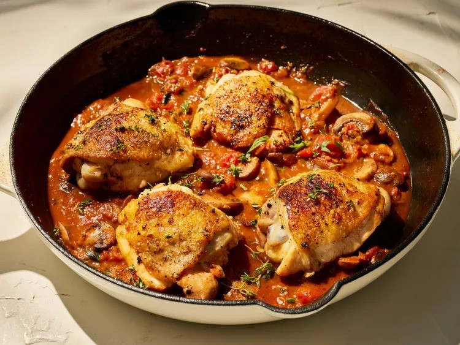

Chicken Chasseur

Description
Chicken chasseur—or chicken, hunter's style—features seared chicken thighs nestled in a delectable mushroom and tomato sauce.
Ingredients
- 4 (8 ounce) bone-in, skin-on chicken thighs
- 1 teaspoon freshly ground black pepper
- 1 3/4 teaspoons kosher salt, divided
- 1 tablespoon olive oil
- 8 ounces fresh cremini mushrooms, sliced
- 2/3 cup sliced shallot
- 1 tablespoon tomato paste
- 4 cloves garlic, finely chopped
- 1/2 cup plus 1 tablespoon (optional) sweet vermouth, divided
- 1 (15 ounce) can diced tomatoes
- 1 1/2 cups chicken stock
- 1 teaspoon chopped fresh thyme, plus more leaves for garnish
- 1 teaspoon chopped fresh tarragon (optional), plus more leaves for garnish
- 2 tablespoons cold unsalted butter, cubed
Steps